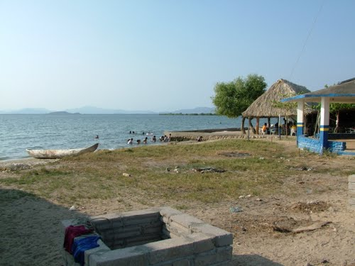
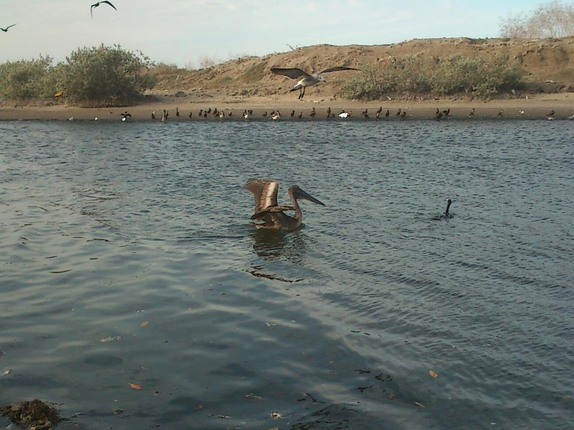
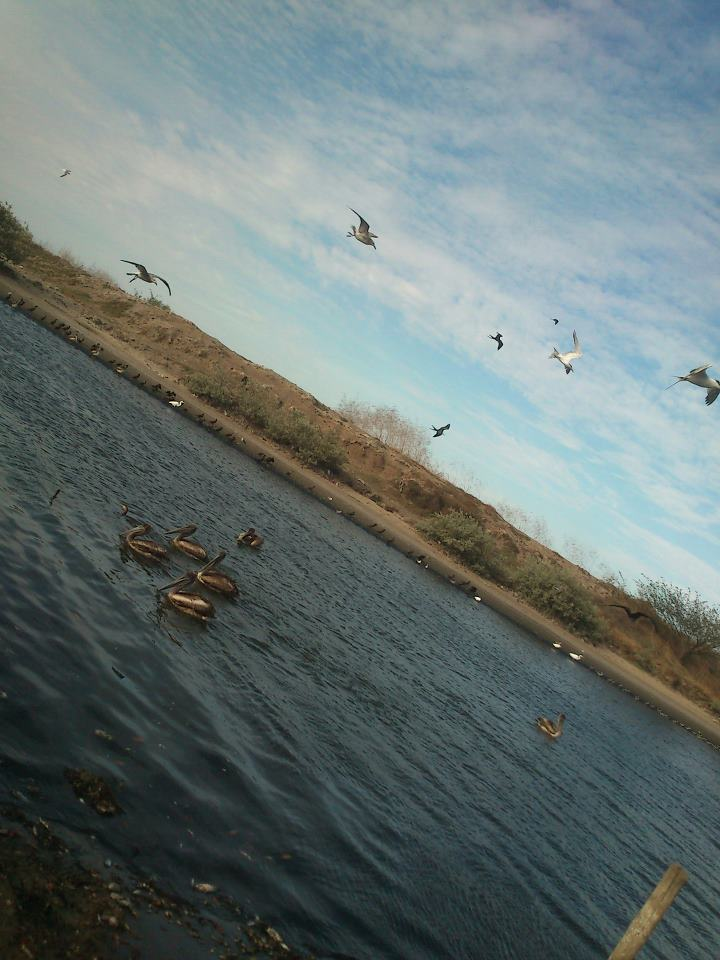
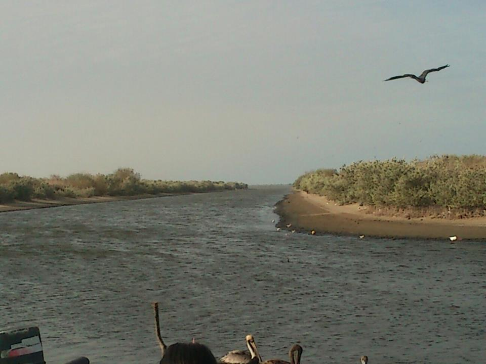
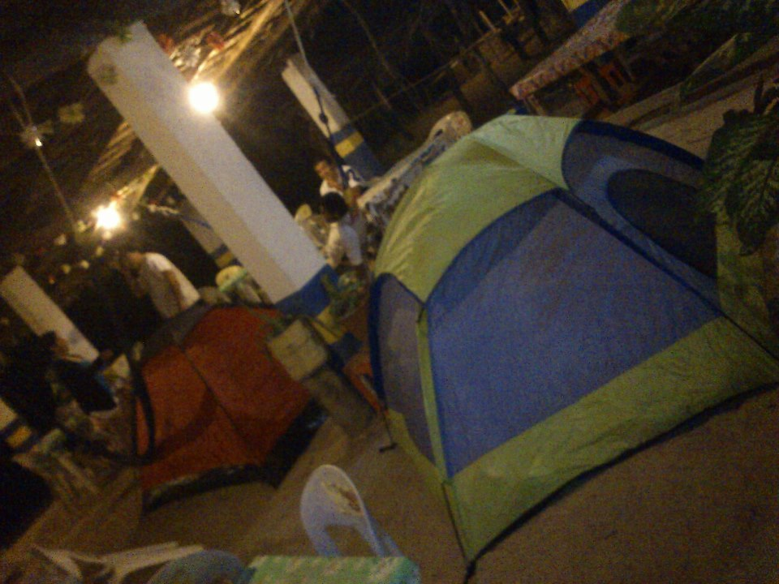

Esta hermosa playa se localiza a 32 Kilómetros de la Ciudad de Arriaga; uno de los principales atractivos de esta ciudad. Reconocido por sus aguas tranquilas, aptas para practicar deportes acuáticos.
Este bello lugar forma parte del cuerpo conocido como Mar Muerto.
Localizada a 32 Kilómetros de la Ciudad de Arriaga.
Se localiza a 173 kilómetros de la ciudad de Tuxtla Gutiérrez por la carretera 200.
Partiendo de Arriaga
Por la carretera federal 195, sobre la carretera Arriaga-Tapanatepec se encuentra un desvío a las comunidades Emiliano Zapata y la Gloria, estando en la Gloria tomara el desvío que lo llevara hacia Santa Brígida pasando por un camino de terracería.
Podrá realizar actividades acuáticas, disfrutar de paseos en lancha, pasar un fin de semana lleno de frescura y aventura.





posicione el mouse sobre las imágenes